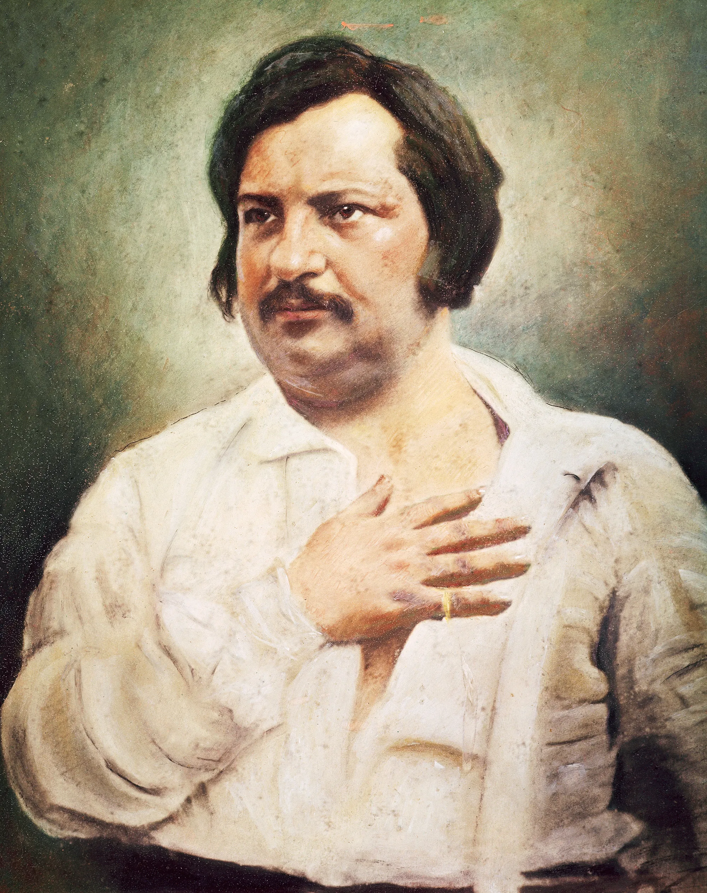

შაგრენის ტყავი
ინფორმაცია წიგნზე
ავტორი: ონორე დე ბალზაკი
ჟანრი: ფანტაზია, ფსიქოლოგიური
გამოშვების თარიღი: 1831 წელი
აღწერა:
გაკოტრებული ახალგაზრდა რაფაელ ვალენტინი გადაწყვეტს, თავი მოიკლას. მაგრამ მოულოდნელად იგი ხდება ფანტასტიკური შაგრენის ტყავის მფლობელი, რომელიც აძლევს მას განუსაზღვრელ შესაძლებლობას, შეისრულოს ყოველი სურვილი. თუმცა, სურვილის შესრულებისას, შაგრენის ტყავი იკუმშება და პატარავდება, რაც მისი სიცოცხლის შემოკლებას ნიშნავს. რაფაელი ცდილობს, შეაჩეროს მოახლოებული აღსასრული.
ავტორი:ონორე დე ბალზაკი, დაბადებული ონორე ბალზაკი 1799 წლის 20 მაისს, ტურში, საფრანგეთი, იყო ცნობილი ფრანგი რომანისტი და დრამატურგი. იგი ფართოდ განიხილება, როგორც რეალიზმის ერთ-ერთი ფუძემდებელი ევროპულ ლიტერატურაში და ცნობილია თავისი დიდი ოპუსით, La Comédie Humaine, ურთიერთდაკავშირებული რომანებისა და მოთხრობების სერიით, რომელიც ასახავს ფრანგულ საზოგადოებას მე-19 საუკუნის დასაწყისში.
ავტორის ხელმოწერა: